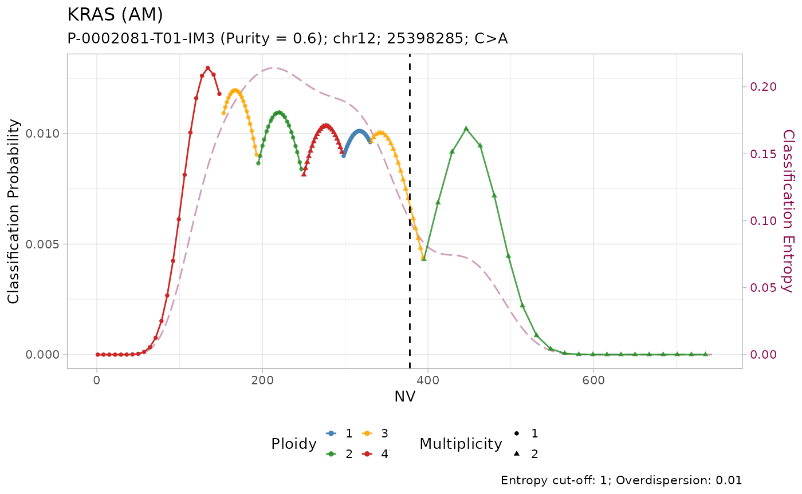
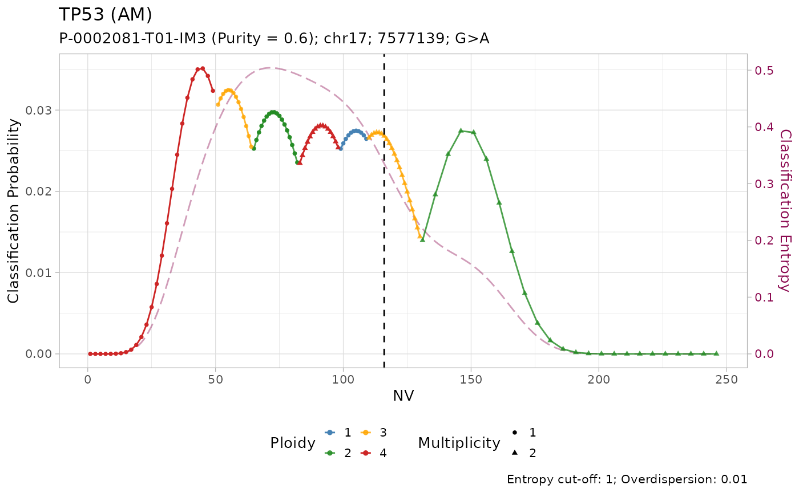
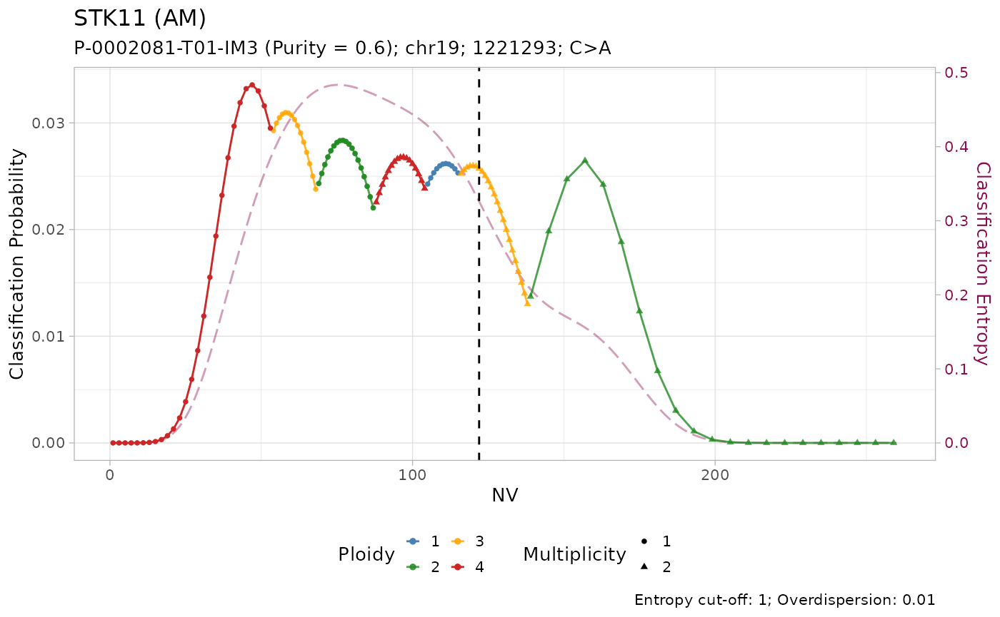
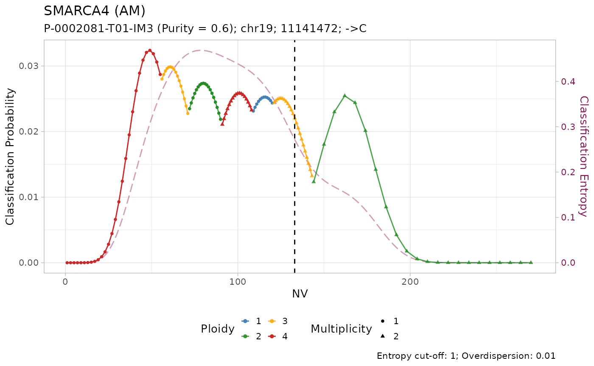
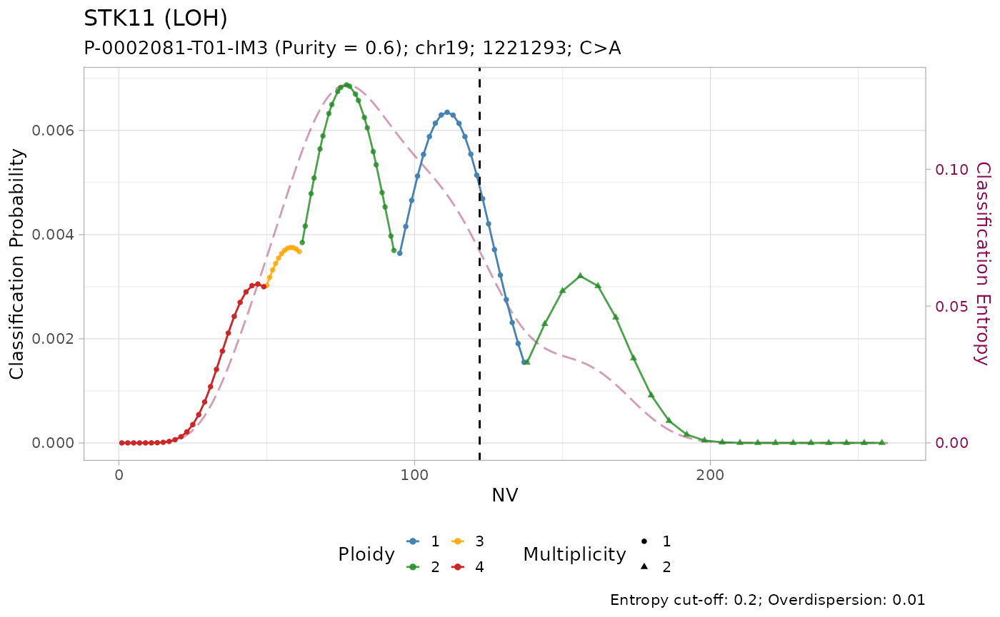

Classify mutations from a targeted sequencing sample
Source:vignettes/Classify_Mutations.Rmd
Classify_Mutations.Rmd
library(dplyr)
#>
#> Attaching package: 'dplyr'
#> The following objects are masked from 'package:stats':
#>
#> filter, lag
#> The following objects are masked from 'package:base':
#>
#> intersect, setdiff, setequal, union
library(INCOMMON)
#> Warning: replacing previous import 'cli::num_ansi_colors' by
#> 'crayon::num_ansi_colors' when loading 'INCOMMON'We work with the example INCOMMON
data.
A Beta-Binomial mixture model for classification
INCOMMON implements a maximum a posteriori classifier to infer the copy number (\(n_A\) for the major allele, \(n_B\) for the minor) and multiplicity \(m\) of mutations from read-count data.
The classifier is based on a Beta-Binomial mixture model, in which the number of reads with a variant (\(NV\)) is the number of events and the sequencing depth \(DP\) is the total number of trials.
A mutation on a genomic site of ploidy \(p = n_A+n_B\), with multiplicity \(m\leq \max(n_A,n_B)\), in a sample of purity \(\pi\) has an expected VAF of \[ \mathbb{E}[\text{VAF}] = \frac{m\pi}{p\pi + 2\left(1-\pi\right)} \]
In the read counting process this represents the event probability. Therefore, based on mutation data
- \(NV\) reads with the variant at the locus;
- \(DP\) coverage at the locus;
- sample purity \(\pi\);
the likelihood of observing \(NV\) reads with the variant is \[ P(X = NV | \theta_\eta,\rho, DP) = \text{Beta-Binonmial}\left(NV \;\large\mid\;\normalsize \theta_\eta, \rho, DP\right) \]
Setting \(\rho = 0\) corresponds to using a pure Binomial model with no model of the sequencer overdispersion.
Example
In the following example, the classification task is run using the default setting \(\rho = 0.01\).
The input must be prepared using function init:
input = init(mutations = example_data$data,
sample = example_data$sample,
purity = example_data$purity,
tumor_type = example_data$tumor_type,
gene_roles = cancer_gene_census)
print(input)
#> ── [ INCOMMON ] Sample P-0002081-T01-IM3 (LUAD), with purity 0.6 ──────────────
#> # A tibble: 4 × 10
#> chr from to ref alt gene NV DP VAF gene_role
#> <chr> <dbl> <dbl> <chr> <chr> <chr> <int> <int> <dbl> <chr>
#> 1 chr12 25398285 25398285 C A KRAS 378 743 0.509 oncogene
#> 2 chr17 7577139 7577139 G A TP53 116 246 0.472 TSG
#> 3 chr19 1221293 1221293 C A STK11 122 260 0.469 TSG
#> 4 chr19 11141472 11141473 - C SMARCA4 133 271 0.491 TSGThis is a lung adenocarcinoma (LUAD) sample “P-0002081-T01-IM3” from
the MSK-MetTropsim dataset. The sample has purity \(\pi = 0.6\) and contains mutations called
on genes KRAS, TP53, STK11 and SMARCA4. A column gene_role
is extracted from the COSMIC Cancer Gene Census (default) catalogue and
attached to the input data according to gene names. Other sources for
gene roles can be input by the user through option
gene_roles of function init.
INCOMMON classification of a sample can be performed using function
classify. Here we do not use any prior knowledge and no
cut-off on the classification entropy.
out = classify(
x = input,
priors = NULL,
entropy_cutoff = NULL,
rho = 0.01
)
#>
#> ── INCOMMON inference of copy number and mutation multiplicity for sample P-0002
#> ℹ Performing classification
#> ✔ Loading CNAqc, 'Copy Number Alteration quality check'. Support : <https://caravagn.github.io/CNAqc/>
print(out)
#> ── [ INCOMMON ] Sample P-0002081-T01-IM3 (LUAD), with purity 0.6 ──────────────
#> ── [ INCOMMON ] Classified mutations using Beta-binomial model with overdispers
#> # A tibble: 4 × 15
#> chr from to ref alt gene NV DP VAF gene_role id label
#> <chr> <dbl> <dbl> <chr> <chr> <chr> <int> <int> <dbl> <chr> <chr> <chr>
#> 1 chr12 2.54e7 2.54e7 C A KRAS 378 743 0.509 oncogene chr1… 3N (…
#> 2 chr17 7.58e6 7.58e6 G A TP53 116 246 0.472 TSG chr1… 3N (…
#> 3 chr19 1.22e6 1.22e6 C A STK11 122 260 0.469 TSG chr1… 3N (…
#> 4 chr19 1.11e7 1.11e7 - C SMAR… 133 271 0.491 TSG chr1… 3N (…
#> # ℹ 3 more variables: state <chr>, posterior <dbl>, entropy <dbl>The results of the classification can be visualized using the internal plotting function. Here is an example:
plot_classification(out)
#> [[1]]
#>
#> [[2]]
#>
#> [[3]]
#>
#> [[4]]
All mutations are classified as with amplification. However, visual inspection of the plots suggest that only the mutation on KRAS has low entropy \(H(x) \leq 0.2\). In effect, it is the only mutation with high sequencing depth \(DP\geq500\).
Given the lower depth, the number of reads with the variant \(NV\) (vertical line) for the other mutations is compatible with multiple copy number configurations, which are thus assigned similar posterior probabilities.
Using priors and the entropy cut-off.
The classification can be made easier by injecting prior knowledge
into the model. In function classify, the user can provide
a table as argument prior. INCOMMON provides an internal
table of prior distributions obtained from PCAWG whole-genomes:
pcawg_priors
#> # A tibble: 4,466 × 4
#> gene tumor_type label p
#> <chr> <chr> <chr> <dbl>
#> 1 ALB HCC 1N (Mutated: 1N) 0.151
#> 2 ALB HCC 2N (Mutated: 1N) 0.593
#> 3 ALB HCC 2N (Mutated: 2N) 0.0474
#> 4 ALB HCC 3N (Mutated: 1N) 0.0727
#> 5 ALB HCC 3N (Mutated: 2N) 0.0485
#> 6 ALB HCC 4N (Mutated: 1N) 0.0198
#> 7 ALB HCC 4N (Mutated: 2N) 0.0683
#> 8 APOB HCC 1N (Mutated: 1N) 0.151
#> 9 APOB HCC 2N (Mutated: 1N) 0.593
#> 10 APOB HCC 2N (Mutated: 2N) 0.0474
#> # ℹ 4,456 more rowsWe know classify mutations using this priors. Since we are biasing
the classification with prior knowledge, it is now reasonable also to
make the classification stricter by using a cut-off on the entropy. The
default value for entropy_cutoff is \(0.20\). Mutations with classification
entropy above this cutoff will be flagged as Tier-2.
out = classify(
x = input,
priors = pcawg_priors,
entropy_cutoff = 0.2,
rho = 0.01
)
#>
#> ── INCOMMON inference of copy number and mutation multiplicity for sample P-0002
#> ℹ Performing classification
#> → No LUAD-specific prior probability specified for KRAS
#> → Using a pan-cancer prior
#> → No LUAD-specific prior probability specified for TP53
#> → Using a pan-cancer prior
#> → No LUAD-specific prior probability specified for STK11
#> → Using a pan-cancer prior
#> → No LUAD-specific prior probability specified for SMARCA4
#> → Using a pan-cancer prior
print(out)
#> ── [ INCOMMON ] Sample P-0002081-T01-IM3 (LUAD), with purity 0.6 ──────────────
#> ── [ INCOMMON ] Classified mutations using Beta-binomial model with overdispers
#> # A tibble: 4 × 15
#> chr from to ref alt gene NV DP VAF gene_role id label
#> <chr> <dbl> <dbl> <chr> <chr> <chr> <int> <int> <dbl> <chr> <chr> <chr>
#> 1 chr12 2.54e7 2.54e7 C A KRAS 378 743 0.509 oncogene chr1… 3N (…
#> 2 chr17 7.58e6 7.58e6 G A TP53 116 246 0.472 TSG chr1… 1N (…
#> 3 chr19 1.22e6 1.22e6 C A STK11 122 260 0.469 TSG chr1… 1N (…
#> 4 chr19 1.11e7 1.11e7 - C SMAR… 133 271 0.491 TSG chr1… 1N (…
#> # ℹ 3 more variables: state <chr>, posterior <dbl>, entropy <dbl>Tumour suppressor genes TP53, STK11 and SMARCA4 have high frequency of LOH in PCAWG, and low frequency of amplification. Injecting this prior knowledge into the model pushes the classification outcome towards this states. The effect of using the prior is evident from the classification plots:
plot_classification(out)
#> [[1]]#>
#> [[2]]#>
#> [[3]]
#>
#> [[4]]